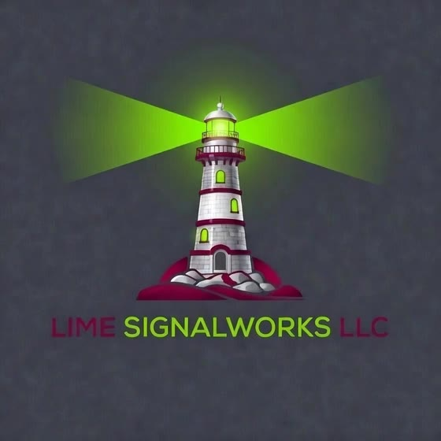

What Rosie does, and the rules that hold her to it.
Rosie trades a paper account only today. We don't publish profit figures. This page shows the rules every order has to pass, how we test them, and what Rosie won't do. Options, futures, crypto and forex are COMING. None of them is live.
Below are four ways we could lay this out. They all use the same facts, so we can compare the formats. The sources for each fact are listed at the bottom of the page.
Five numbers, each with its source
Best for: a quick scan on the homepage. One big number per rule, one plain sentence, and where to check it.
Every buy goes to the broker with one fixed stop-sell order (GTC) for the same number of shares. The stop price is set at entry and never moves. It is never placed tighter than 3× the symbol's measured overnight gap, so volatile names get a wider stop.
Source: Rosie README · "Protection"Each position is sized so that if its stop is hit, the loss at the stop price is at most 2% of the account. A gap can still fill below the stop.
Source: README · "Sizing"All open positions and pending orders together can't risk more than 6%, which is three full-size trades. Any order that would go over is refused.
Source: README · "Total open risk"Trailing stops were removed by owner decision on 21 Oct 2026. Entries, scale-outs and exits come from the signal logic. A test checks that Rosie never creates a trailing stop.
Source: tests/test_no_trailing_stops.pyOut of 1,746 tests, 1,706 passed and 0 failed. 40 were skipped because they need a browser that wasn't installed on the test machine. Run 27 Oct 2026, 12:41 ET, commit d299899.
Source: pytest run on nrini49/interactive
The lighthouse doesn't steer the ship. It shows where the rocks are.
Follow a single buy through the checks
Best for: people who want to see how it works. A worked example uses the same formula as the code, and every number in it is marked EXAMPLE.
- Measured symbols only. If Rosie doesn't have gap statistics for a symbol yet, she refuses the entry. Exits are never blocked.
- Size from the stop. The number of shares comes from the actual stop price, so the loss at the stop is at most 2%.
- Check the 6% budget. If the order would push total open risk past 6%, it's trimmed to fit or refused.
- Send as one package. The limit buy and its stop-sell (GTC) go to the broker together. The stop stays with the broker even if Rosie's computer goes offline.
- Fail closed. If equity is unknown or stale, or a setting is invalid, nothing is sent and Rosie records the reason.
When each rule was set
Best for: building trust over time. Each dated entry is a decision we made and wrote down. This list only gets longer, and nothing on it is a result.
Measured-symbol gate confirmed
An order for a symbol without measured gap statistics can't reach the broker. Closing an existing position doesn't need those statistics.
Automatic execution limited to paper
The trading loop can place orders on its own only in the paper lane. It checks that it's in paper before every order.
Trailing stops removed; 2% per trade and 6% total set
Each position now has one fixed disaster stop held at the broker. Sizing and the total open-risk budget were set the same day.
Loop entry and exit guards
Added a 30-minute pause after the open, a 60-minute cooldown before buying a symbol again, and minimum hold times to cut down on rapid in-and-out trades.
Test run: 1,706 passed, 0 failed
1,746 tests in total. 40 browser tests were skipped on this machine.
Each claim next to how to verify it
Best for: skeptical or professional readers. Every claim sits next to how to check it and its current status, including what isn't done yet.
| What we say | How you can check | Status |
|---|---|---|
| Every buy is sent with one fixed GTC stop-sell order. | The order package in the broker's open-orders list. Code: place_protected_entry(). | IN CODE · TESTED |
| The loss at the stop price is at most 2% of equity. | The sizing formula in the README and its tests. | IN CODE · TESTED |
| Total open risk is capped at 6%. | The refusal message names what's already at risk and how many shares would still fit. | IN CODE · TESTED |
| No trailing stops. | tests/test_no_trailing_stops.py | IN CODE · TESTED |
| Rosie trades a paper account only. | The lane is checked before every order, and the dashboard shows a PAPER badge. | TRUE TODAY |
| Options, futures, crypto, forex. | n/a | COMING · NOT LIVE |
| Performance results. | We don't publish any. Paper results don't predict live results. | NOT CLAIMED |
A new capture of the dashboard on the paper account goes here, with the PAPER badge visible and the account number blurred.
The Stops panel showing one fixed STP GTC order for each position, with no trailing stops.
What Rosie will not do
- Trade real money today. Rosie trades a paper account only.
- Promise profits, or claim she never loses. She can lose, and paper results don't predict live results.
- Guarantee the stop price. A stop becomes a market order when it triggers, and a gap or crash can fill below it.
- Use trailing stops, or move the disaster stop after entry.
- Enter a symbol she hasn't measured.
- Go over 2% risk per trade or 6% total open risk. Those orders are refused, not quietly resized upward.
- Block you from exiting. Closing positions, FLATTEN ALL, and anything you do in TWS are never blocked.
- Trade options, futures, crypto or forex. Those are coming and are not live.
- Give investment advice.
How it reads with an occasional video or shape break
Suggested pacing: two or three evidence blocks, then one short break, never two breaks in a row. Each break is a short muted loop or a generated shape with one line of text. When the visitor's system asks for reduced motion, breaks show a still image instead.
One fixed stop held at the broker
One STP SELL GTC per buy. Its price is set at entry and never moves.
2% per trade · 6% total
Position size comes from the stop price. Orders that would go over the limits are refused.
Calm is a setting, not a mood.
1,706 tests passed, 0 failed
Run 27 Oct 2026, commit d299899. 40 browser tests were skipped.
Paper only, checked before every order
Automatic orders can only go to the paper lane.
What Rosie will not do
The full list of limits from the section above.